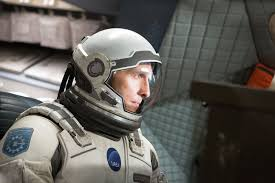
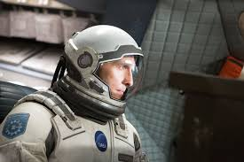

Мои любимые фильмы
1+1
Краткое содержание фильма
Филипп — богатый аристократ, который после несчастного случая оказывается парализованным. Он нанимает на работу Дрисса, человека из неблагополучного района, который не подходил под роль классического помощника. Однако, их необычная дружба помогает обоим героям преодолеть личные сложности и изменить свои жизни.
Кадры из фильма

О фильме
| Год | 2011 |
| Страна | Франция |
| Жанр | Драма, комедия |
| Режиссеры | Оливье Накаш, Эрик Толедано |
Пираты Карибского моря
Краткое содержание фильма
Капитан Джек Воробей — харизматичный и хитроумный пират, попадающий в водоворот приключений. Вместе с молодым кузнецом Уиллом Тёрнером они вступают в битву с проклятыми пиратами во главе с капитаном Барбоссой, чтобы спасти возлюбленную Уилла и вернуть свободу своим душам.
Кадры из фильма

О фильме
| Год | 2003 |
| Страна | США |
| Жанр | Приключения, фэнтези |
| Режиссер | Гор Вербински |
Интерстеллар
Краткое содержание фильма
Когда Земля оказалась на грани выживания, группа исследователей отправляется в путешествие за пределы нашей галактики, чтобы найти новый дом для человечества. Главный герой Купер оказывается перед выбором: спасти будущее человечества или свою семью.
Кадры из фильма
 

О фильме
| Год | 2014 |
| Страна | США, Великобритания |
| Жанр | Фантастика, драма |
| Режиссер | Кристофер Нолан |